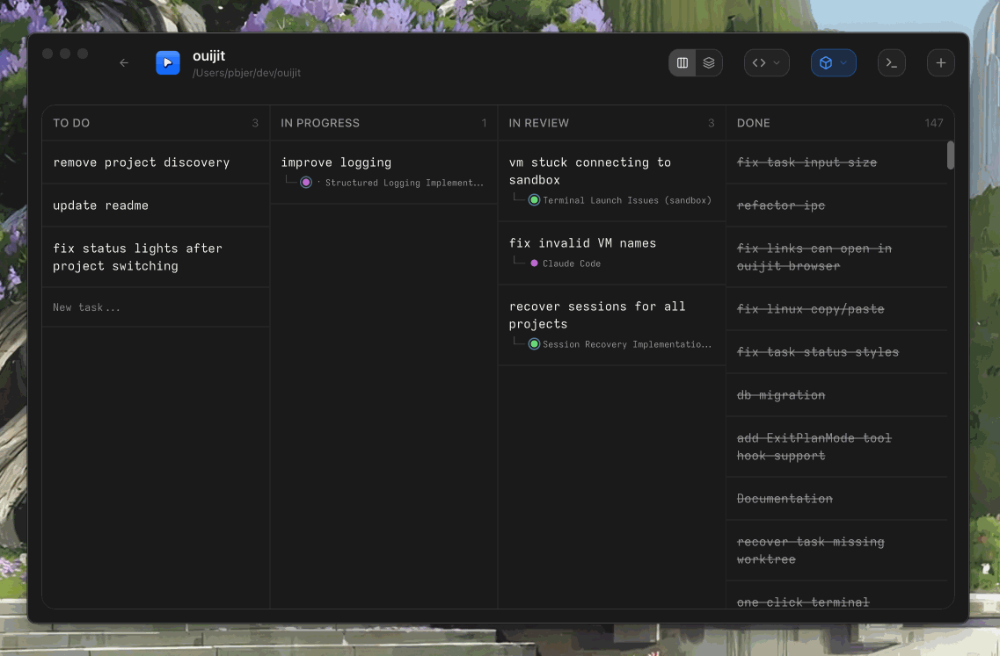

Every task gets its own terminal, worktree, and optional VM sandbox. A desktop app for macOS and Linux.

Drag-and-drop task management with four columns: To Do, In Progress, In Review, and Done. Each task gets its own isolated workspace.
Integrated terminal sessions with a card stack UI. Open multiple terminals per task, switch between them with keyboard shortcuts.
Every task runs in its own git worktree — automatic branch creation, copy-on-write file cloning, and clean merges back to main.
Optional Lima VM integration for sandboxed terminal sessions. Keep untrusted agent commands isolated from your host machine.
Script hooks that respond to Claude Code events. See real-time agent status in the UI and automate workflows on task changes.
Native Electron app with Apple-inspired dark theme. Signed and notarized on macOS, with full Linux support.